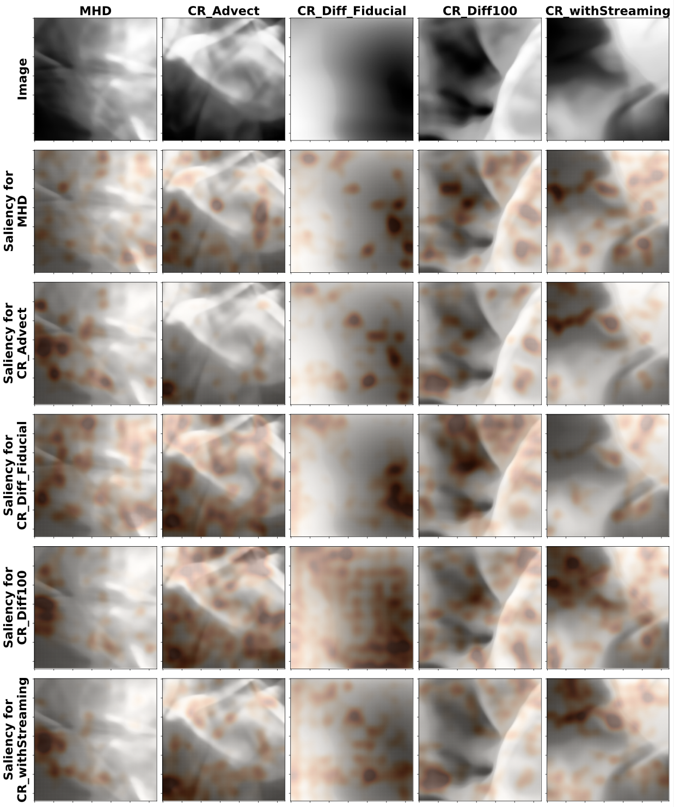

Deep Learning Cosmic Ray Transport from Density Maps of Simulated, Turbulent Gas
Relevant paper: Bustard and Wu 2024, published in Machine Learning Science and Technology
I’m happy to announce that my recent paper with John Wu (Space Telescope Science Institute & Johns Hopkins University), titled “Deep Learning Cosmic Ray Transport from Density Maps of Simulated, Turbulent Gas”, has been accepted to MLST and is now online! In this paper, we demonstrate a novel, neural-based method to constrain cosmic ray transport solely from images of simulated, turbulent gas, and we utilize network interpretability methods (image manipulation and saliency maps) to derive new insights and highlight the transport-dependent impacts of cosmic rays on their surroundings.
Click here to read the PDF or check out the arXiv version here: https://arxiv.org/abs/2402.03518
This work was generously funded by the National Science Foundation and the Gordon and Betty Moore Foundation, and it wouldn’t have been possible without the support of the Kavli Institute for Theoretical Physics, which hosted me for my postdoctoral fellowship and hosted the 10-week program “Building a Physical Understanding of Galaxy Evolution with Data-driven Astronomy” where John and I met and began this project.
So what are cosmic rays? What does transport mean, and why is it important? Keep reading to find out!
Introduction
What are cosmic rays?
Galaxies are complex, dynamical systems with collisional components, such as gas, and collisionless components that primarily interact through gravity, such as stars and dark matter. One of the collisional components, in addition to normal, non-relativistic gas and magnetic fields, is the cosmic ray population. These relativistic particles travel the Universe along magnetic field lines, and their interactions with non-relativistic gas are mediated by electromagnetic forces. While cosmic rays are in very low abundance compared to normal gas (only about a billionth of all particles in the Milky Way galaxy are cosmic rays), they collectively have as much energy as their less energetic, non-relativistic counterparts and, therefore, can exert a significant influence on galaxies and their surroundings. A large part of my doctoral and postdoctoral research, more-or-less, was to design and run numerical experiments on national supercomputers to model cosmic ray effects on different environments (sometimes full galaxies, sometimes idealized chunks of galaxies or the surrounding “circumgalactic medium”) incorporating modern, plasma physics-based theories of cosmic ray propagation.
What’s the problem?
From my research and that of others in the field, the far-reaching influence of cosmic rays is coming into clearer view. For instance, cosmic ray pressure and energy transfer to gas can drive a wide variety of fluid instabilities in stratified galaxy disks (Heintz, Bustard, and Zweibel 2020) and galaxy surroundings (Tsung, Oh, and Jiang 2022), they can help ionize and pressurize cold molecular clouds where stars are born (Cesarsky and Volk 1978; Morlino and Gabici 2015), and they can help drive fantastic, galactic-scale, gaseous outflows called “galactic winds” that circulate gas throughout the Universe and help regulate star formation in galaxies (Breitschwerdt, McKenzie, and Voelk 1991; Ruszkowski, Yang, and Zweibel 2017; Farber et al. 2018; Bustard et al. 2020; Bustard and Zweibel 2021). However, a nagging uncertainty that underlies these models is how cosmic rays propagate along magnetic fields and, subsequently, how they couple to non-relativistic gas. While our theory of cosmic rays is becoming ever-more advanced, confirmation from observations eludes us.
The current state-of-the-art in constraining cosmic ray propagation is as follows. Phenomenological models of cosmic ray propagation are fit to a variety of direct and indirect cosmic ray indicators, for instance:
* Gamma-ray emission from cosmic ray interactions with thermal gas
* Radio synchrotron emission generated by cosmic ray electrons spiraling around magnetic field lines
* Cosmic ray spallation products, i.e. the secondary by-products of direct collisions between cosmic rays of varying composition with other particles.
Obtaining these indicators or “observables” is expensive and time-consuming. Each of the three modes above is probed by a different telescope or instrument, with varying sensitivities, resolution, and sky coverage.
On top of that, there are limiting assumptions to the phenomenological models themselves. For instance, what is ultimately being constrained is the large-scale propagation of cosmic rays, averaged over many tangled magnetic field lines. This propagation, whose best-fit model is “diffusive”, does not tell us the fine-grained cosmic ray propagation and coupling to individual magnetic field lines, which is what we ultimately seek. At this stage, despite some very clever recent attempts to compare models to high-resolution observations (Thomas, Pfrommer, and Enßlin 2020), we have no robust, efficient way to determine the small-scale transport of cosmic rays from observations. The following work, then, is essentially in untreaded water, with no good, direct baseline for comparison.
A proposal and a novel method to derive new insights from simulations
Instead of requiring “multimessenger” indicators of cosmic rays from radio emission, gamma-ray emission, etc., what if we could infer cosmic ray transport solely by observing the non-relativistic gas?
The main assumption underlying this hypothesis is that cosmic rays must leave distinct, transport-dependent imprints on the surrounding gas. I’ve written a blog post about recent research I conducted with Peng Oh at UC-Santa Barbara (Bustard and Oh 2023) on this very topic, showing that cosmic rays modify the spectra of turbulent gas and the mixture between solenoidal and compressive motions in distinct, transport-dependent ways.
This work combines the TBs of 3D simulation data generated in (Bustard and Oh 2023) with powerful computer vision models. Specifically, we probe whether convolutional neural networks (CNNs) can learn the underlying cosmic ray transport mode simply by observing gas density. We show that even a relatively simple network can classify unseen images to their correct category (5 total categories) with 95% accuracy!
Additionally, we use image manipulation and network interpretability tools to pick out the salient features of the images that led to the network decision. This allows us to discover new imprints of cosmic rays on gas, improving our fundamental understanding of how cosmic rays interact with their surroundings.
That’s enough introduction. Let’s dive in!
Image generation and processing
We generate images by manipulating 3D volume data stemming from simulations of astrophysical gas stirred in a turbulent box (imagine stirring a cup of coffee, but the ingredients are gas, magnetic fields, and cosmic rays, and the stirring utensil is a C++ module that applies random kicks to the gas). Greater detail on the simulation setup can be found in (Bustard and Oh 2023).
To create 2D images from 3D simulation cubes, we largely follow previous, similar work from (Peek and Burkhart 2019), which trained CNNs on MHD simulations (without cosmic rays) to learn salient imprints of magnetic fields on gas (rather than our goal to learn imprints of cosmic rays on gas). Following their lead, we create one-cell-thick slices in the plane parallel to the initial magnetic field direction (in the y-z plane in the figure below).
Splitting these images into training, validation, and test sets, in this case, requires substantial care. Normally, one splits data randomly; however, imagine two images directly next to each other (zero separation in the x-direction), and imagine that one falls into the training set and one falls into the validation set. Because gaseous structures extend over multiple cells in the x-direction, there are strong correlations between these images. During training and hyperparameter tuning, the network simply memorizes the correlation, cheating its way to very high accuracies while not learning any true, salient information. This was readily apparent in our interpretability tests, with saliency maps showing seemingly random, pixel-scale junk rather than expected salient features, underscoring the need for rigorous network interpretation.
For this reason, we carefully separate training, validation, and test sets originating from the same 3D cube by spatial buffers. This decreases correlations between the sets. Furthermore, we generate images from 6 simulation cubes taken at different times, each snapshot separated by at least an eddy turnover time so the turbulence has randomized and erased all correlations. This decreases image correlations within each set, increasing the variety of images the network is trained and finetuned on.
In all, for each image set, we generate 90,000 images to train, fine-tune, and test our network (50,000 training images, 20,000 validation images, and 20,000 test images).
We train separate networks on two image sets
The density in each image is logarithmically scaled to bring the full range of densities to the forefront, and all images are histogram equalized and normalized to values between 0 and 1. This case, without further modifications, is called the Full Power dataset, since we retain spectral information – how much power is in perturbations at every scale. We also create another dataset, Flattened Power, where we flatten the 1D power spectrum of every image, thereby erasing spectral information that could be used to discriminate between classes. In this case, we’re interested in whether cosmic rays imprint phase differences on the gas and whether CNNs can pick up on these differences.
Cosmic ray transport modes we consider
The five classes of cosmic ray transport we consider are (see also the table below):
- MHD – A system with no cosmic rays.
- CR_Advect – Includes cosmic rays that are fully locked to the gas, i.e. there is no additional slippage or transport of cosmic rays along magnetic field lines.
- CR_Diff_Fiducial – Includes additional cosmic ray diffusion, with a diffusion coefficient \(\kappa\) that sits at a sweet-spot where cosmic rays will have maximal impact on the gas.
- CR_Diff100 – Includes diffusion with a diffusion coefficient 100 times greater than the fiducial case. This means cosmic rays diffuse over small-scale perturbations very quickly, generally not having a great influence on the gas.
- CR_withStreaming – Transport in this case includes fiducial diffusion but also includes extra terms for so-called cosmic ray “streaming.” This type of transport is fundamentally different from diffusion and, subsequently, cosmic rays interact with gas perturbations in a fundamentally different way. Streaming also adds an energy exchange term between the gas and cosmic rays that isn’t present in the purely diffusive case. Streaming generally has the strongest theoretical basis, but constraining transport to be streaming vs diffusion is very difficult using current phenomenological models and multiwavelength observations.
Note that in the four scenarios where cosmic rays are present, there are equal amounts (in terms of pressure) of cosmic rays and gas. This “equipartition” roughly occurs in the Milky Way disk and could be reasonable, as well, in circumgalactic environments above the main plane of the Galactic disk. Magnetic fields in all simulations have a pressure about 10 times weaker than gas and cosmic rays, but while they have a less important dynamical influence on the system, magnetic fields serve as the important binder between cosmic rays and gas.
A set of examples from each class is given below. The top row shows images with full spectral information (Full Power), and the bottom row shows a different set of images with spectral information erased (Flattened Power).
Note how the MHD, CR_Advect, and CR_Diff100 classes, in particular, show sharp transitions between dense (white) and underdense (black) regions, as well as numerous small-scale structure. CR_Diff_Fiducial shows far less small-scale structure, which we believe is due to strong cosmic ray damping of gas perturbations in that “sweet-spot” diffusion regime. CR_withStreaming is somewhat intermediate.
To better visualize scale-dependent differences between images, we show 1D power spectra as a function of wave number \(k\). There are clear differences between the classes, with the MHD case showing the greatest power at intermediate scales and CR_Diff_Fiducial showing far less.
Part of our exploration is to see whether convolutional neural networks can learn those spectral differences when presented with 2D images. However, we also explore what happens when we equal out those spectral differences (our Flattened Power set), leaving a network to learn solely phase differences arising due to different cosmic ray transport modes.
Convolutional Neural Network (CNN) Structure and Training
Convolutional neural networks (CNNs) have been the workhorses of computer vision tasks for a number of years, and CNN variations remain competitive on standard computer vision benchmarks compared to newer, more advanced architectures such as Vision Transformers.
Each layer of our network contains a 2D convolution, batch normalization, and SiLU activations (similar to other continuously differential activation functions but robust against the “dying neuron” problem possible with traditional ReLU activations).
To ward off overfitting, we add a dropout layer near the end of the network in between the average pooling layer and the final fully connected layer. In testing, we determined that dropping out 25% of neurons worked best, as shown in the PyTorch code below that generates our fiducial network.
def create_model(config):
model = nn.Sequential(
nn.Conv2d(1, 8, kernel_size=3, stride=2, padding=1),
nn.BatchNorm2d(8),
nn.SiLU(),
nn.Conv2d(8, 16, kernel_size=3, stride=2, padding=1),
nn.BatchNorm2d(16),
nn.SiLU(),
nn.Conv2d(16, 32, kernel_size=3, stride=2, padding=1),
nn.BatchNorm2d(32),
nn.SiLU(),
nn.Conv2d(32, 64, kernel_size=3, stride=2, padding=1),
nn.BatchNorm2d(64),
nn.SiLU(),
nn.AdaptiveAvgPool2d(4), # works with any input size
nn.Dropout(0.25)
nn.Flatten(),
nn.Linear(64*4*4,config.num_classes)
).to(device)
To size our network appropriately to the dataset, we tested different numbers of layers and logged the training and validation loss, as well as other statistics such as accuracy, precision, recall, and F1 score (the harmonic mean between precision and recall). The loss for 4 and 5 layer networks is plotted below over 40 epochs.
The loss generally shows 4 layers to work best. Fewer layers (not shown) resulted in higher training loss, while a 5 layer network shows signs of validation loss separating from training loss (overfitting). Other parameter choices (learning rate, batch size, etc.) were similarly determined through a manual hyperparameter study.
Loss for the Flattened Power network is shown below. In this case, overfitting was obvious after about 25 epochs, so our final, trained network was taken after only 25 epochs.
In the table below, we display several commonly used metrics for multi-class machine learning problems, which depend on the number of true positives (TP), true negatives (TN), false positives (FP), and false negatives (FN). The accuracy is defined as (TP + TN) / (TP + TN + FP + FN), the precision is defined as the TP / (TP + FP), the recall is defined as the TP / (TP + FN), and the F1 score is the harmonic mean between the purity and recall. The precision can be considered a measure of “purity” while the recall can be thought of as “completeness” for CNN predictions. In some cases, for instance for the MHD class, the network achieves high precision at the expense of recall, a common behavior that makes the F1 score a necessary metric to present.
Accuracies range from 92% to 99% for the Full Power model, which is quite good! Accuracies are somewhat lower for the Flattened Power model, as expected since some distinguishing spectral differences are now thrown out, but still quite high, suggesting significant transport-dependent phase differences!
Below is a confusion matrix for the Full Power model, showing that the network most frequently mistakes MHD, CR_Advect, and CR_Diff100 images. This is an excellent confirmation of our expectation, since we anticipated that cosmic rays with those propagation modes leave gas primarily unaffected.
Most impressively, the CR_Diff_Fiducial and CR_withStreaming classes, which differ only in that cosmic ray streaming is included in addition to fiducial diffusivity, are well-distinguished, with the network achieving 94.2% accuracy on CR_withStreaming and only rarely (3.4% of the time) confusing CR_withStreaming for the CR_Diff_Fiducial class. Instead, CR_withStreaming is confused for CR_Diff100 ≈ 14.5% of the time, likely because additional cosmic ray streaming means cosmic rays are propagating faster along field lines, somewhat akin to faster diffusion.
Network Interpretation
Armed with a quite accurate network trained on non-correlated data, we can test more extensively why the network made its decisions. The hope is that this interpretability exercise can confirm expected behavior and/or show us new transport-dependent imprints of cosmic rays on turbulence.
Saliency Maps
We start by making saliency maps. These work as follows:
1. Load in an image from one of the data sets
2. Evaluate the image with gradients on
3. Run backpropagation and store the gradients
4. Map the gradients to individual pixels
5. Gaussian smooth the gradient map
6. Return the image and a corresponding saliency map for a given class
This allows us to see what parts of a given image make the network think it belongs to a given class. A Python/PyTorch function to accomplish this is below:
def saliency_class_specific(image, model, pred_class, sigma = 4.0):
"""Create a saliency map showing activations for each class on an input image
Inputs:
image: 2D image
model: trained PyTorch model
pred_class: class to pull out saliency for
sigma: standard deviation for gaussian smoothing
Returns:
plt_image: input image
filtered_saliency: Gaussian smoothed saliency on a 2D grid
"""
model.eval() # put in evaluation mode
# requires a 4D tensor, so need to reshape this 3D one
image = image.reshape(1, 1, image.shape[1], image.shape[2])
# we need to find the gradient with respect to the input image, so we need to call requires_grad_ on it
image.requires_grad_()
# run the model on the image
outputs = model(image)
# Get the index corresponding to the maximum score and the maximum score itself.
# pred_max_index = outputs.argmax()
pred_max_index = pred_class
pred_max = outputs[0,pred_max_index]
# backward pass to calculate the gradient
pred_max.backward()
saliency, _ = torch.max(image.grad[0].data.abs(),dim=0) # dim = 0 is channel
# renormalize saliency
saliency = (saliency - saliency.min())/(saliency.max()-saliency.min())
# code to plot the saliency map as a heatmap
plt_image = image.reshape(image.shape[2],image.shape[3])
plt_image = plt_image.detach().numpy()
# Blur the saliency maps using a gaussian kernel and return saliency to later plot on the original image
filtered_saliency = gaussian_filter(saliency,sigma=sigma)
return plt_image, filtered_saliency
Saliency heat maps are overplotted on top of select images from each class below. Each column shows an input image from a different class, and each row shows the regions of that image that led the network to believe it belonged to each class.

These maps are quite a bit more difficult to interpret in this astrophysical case compared to typical classification problems where, for instance, a network determines whether a dog or cat is present in an image. The reason is likely that, in physics, differences over a range of scales are frequently the salient features, rather than localized objects with well-defined boundaries. Related work using wavelet scattering transforms, which construct similar representations as CNNs (e.g. (Bruna and Mallat 2013; Cheng et al. 2023; Velicheti, Wu, and Petric 2023)), has demonstrated the importance of encoding phase information and scale separation.
Nevertheless, these saliency experiments can be quite illuminating if we restrict ourselves to fewer classes and retrain our network. For instance, in the figure below, yellow contours show the saliency for 12 different images, 6 from the MHD class and 6 from the CR_Diff_Fiducial class, with the network trained (to 99% accuracy!) on only those two classes.
Now, it’s clear that CR_Diff_Fiducial class is distinguished by broad gray regions marking smooth density transitions, while the MHD class is characterized instead by sharp transitions and lots of small-scale structure. With all 5 classes present, this is harder to discern because all three of MHD, CR_Advect, and CR_Diff100 show sharp transitions. The network must pick up on higher-level distinguishing information, but this is difficult to see.
Image Manipulation
Knowing that smooth transitions characterizes the CR_Diff_Fiducial images, let’s try some image manipulation and probe this further. We’ll take sample images from each class (each column is a different class) and blur each image to different extents by applying a Gaussian filter with varying standard deviation \(\sigma\). In the top center of each image, we display the probability that the network believes this image belongs to the CR_Diff_Fiducial class.
Without any filtering, the network is confident (and correct) in all cases, but as we filter more and more, the network more and more confidently predicts the CR_Diff_Fiducial class for every image. This collapse to one class tells us that the CR_Diff_Fiducial class is, indeed, very strongly characterized by blurriness and lack of small-scale structure.
Salient, Non-Spectral Features
Our Flattened Power dataset gives us a different glimpse into how cosmic rays impact their surroundings. Namely, by erasing all spectral information (i.e. the presence or lack of small-scale structure is no longer available to the network), a separately trained network must learn the phase differences that arise from different cosmic ray transport modes.
A confusion matrix for this Flattened Power dataset and our best-trained model is shown below.

While the highest accuracies achieved in this network are not as high as those for the Full Power dataset, they are still quite high and allow us to possibly learn new insights by applying our saliency map method. The figure below shows a similar saliency experiment to before, and it provides some possible insights to what separates the CR_withStreaming class from the others: the presence of sharp, dark (underdense) features that are, in all images shown, strongly correlated with predictions for the CR_withStreaming class.
While it’s too early to try to apply such a methodology (flatten power, train a network, etc.) to real astrophysical observations, for reasons outlined in the next section, such a strong indicator is a positive sign that streaming transport leads to unique, non-spectral imprints on the surrounding gas. In Bustard and Wu 2024, we speculate that this signature is related to a transport-dependent change in the mixture of solenoidal vs compressive fluid motions, as found in (Bustard and Oh 2023).
Discussion
While this exploratory study leads to highly accurate predictions on simulation data, can we apply these trained networks to real astronomical observations? Not quite.
First, there are several limitations that make even these state-of-the-art simulations only an idealized representation of reality: * Incomplete physics – for instance, these simulations use an isothermal (constant temperature) equation of state rather than an adiabatic equation of state with more realistic but environmentally dependent radiative cooling. * Limited parameter coverage – a number of simulation input parameters are held fixed, including the magnetization of the gas and the turbulent stirring rate. * Issues of convergence – (Bustard and Oh 2023) conducted a convergence study, showing that the main transport-dependent trends are not sensitive to spatial resolution; however, increasing resolution always leads to more small-scale power, since the inertial range of simulated turbulence dissipates at scales of order 20-30x the spatial resolution.
Furthermore, there are observational uncertainties that make this endeavor difficult. We show, for instance, that our trained network does not accurately predict classes if images are created by projecting over many cells in the x-direction. This issue of “domain shift”, i.e. applying a model trained on one dataset to another, is a prevalent issue in machine learning and an active area of research (Ćiprijanović et al. 2023). It is possible to increase our accuracy by training a model specifically on images with the same projection depth as in the validation set, thereby bypassing this model misspecification problem. However, this is unlikely to be helpful in real observations of turbulent gas clouds, which are subject to uncertain distance measurements (Green et al. 2019). Moreover, we do not have strong constraints on how far we can see into the gaseous structure (i.e. the optical depth), which means that we cannot estimate a priori the number of turbulent eddies that we would expect to see in the line-of-sight direction and, therefore, cannot determine an appropriate simulation projection depth to compare to.
Overall, our work represents a novel demonstration of deep CNNs learning salient imprints of cosmic rays on surrounding gas from simulations of astrophysical turbulence, and our interpretability exercises strengthen prior theories of this cosmic ray transport-dependent impact, reveal new insights, and help build intuition.